Pandas Crash course
For the review or refresh of pandas we will follow the structure bellow:
- Series.
- DataFrames.
- Missing Data.
- GroupBy.
- Operations.
- Data Input and Output.
Series¶
Series are similar to Numpy arrays ( they are build on top of Numpy arrays) and the difference is that SEris can have axis labels, that means that can be located not just by numbers but by labels, and they can hold much more than just numbers, they can hold any type of python object.
We are going to create Series in different ways:
Creating a series.¶
First we will need to import numpy and pandas
1 2 | |
now we are going to create a list, a numpy array and a dictionary that later will be use to create the series
1 2 3 4 | |
1. Using List¶
1 2 3 4 5 | |
The about is a Series that use just number as labels, now let use the labels defined before with the list lables
1 2 3 4 5 | |
now a shorter way
1 2 3 4 5 | |
2. Using NumPy arrays¶
1 2 3 4 5 | |
now with the labels
1 2 3 4 5 | |
3. Using Dictionaries¶
1 2 3 4 5 | |
Using Index¶
Pandas use the index name or numbers which allow to access the information ( the index are the rows).
1 2 3 4 5 6 7 8 9 10 11 12 13 14 15 16 17 18 19 20 21 22 23 24 25 26 | |
DataFrames¶
Datafarames are inspire in R programming they look like a group of series put together to share the same index.
1 2 3 4 5 6 7 8 9 10 11 12 13 14 15 16 17 18 19 20 21 | |
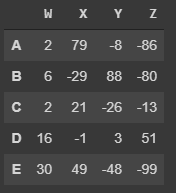
Selection and indexing¶
We can select and grad columns or parts of the DataFrame
Columns¶
To grap a single column
1 2 3 4 5 6 7 | |
Grap multiple Columns
1 2 3 4 5 6 7 | |
If we use the method type() we can see that the columns are just pandas series
1 2 | |
Create a new column¶
1 2 | |
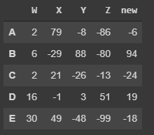
Removing Columns¶
for the removing of a column is important to understand that if it is not reassigned (df = de.drop()) the removal wont be save, see in the example:
1 2 3 4 5 6 7 8 9 10 11 12 13 14 15 16 17 18 | |
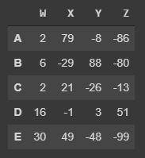
Working with Rows¶
Now to select a row we will need to use a bit different approach, in this case we will need to use df.loc[] we use loc and the name or number of the row.
1 2 3 4 5 6 | |
The selection by numerical index will be
1 2 3 4 5 6 | |
Multi-row selection¶
Similar with columns we can select multiple rows at the same time
1 2 3 4 | |
now by numerical index
1 2 3 4 5 | |
Now we can select a subset of rows and columns
1 2 3 4 | |
Removing a row¶
To remove a row we use drop() but this time the parameter axis=0, and in the same way with columns, if this is not reassigned the removal wont take place.
1 2 3 4 5 6 7 8 9 10 11 12 13 14 | |
Select a specific cell¶
You can select a specific cell in the DataFrame, you can use the function at()
1 2 3 4 | |
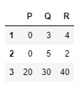
Conditional Selection¶
Pandas allow the conditional selection similar to NumPy, for the examples of this we will use the DataFrame:
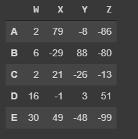
1 2 3 4 5 6 7 8 9 10 11 12 13 14 15 | |
More examples
1 2 3 4 5 6 7 8 9 10 11 12 13 14 15 16 17 18 19 20 21 22 23 24 25 | |
If we want to use more than one conditional we can us binary operator like “|” or “&”.
1 2 3 4 | |
More about index¶
We can reset the index, this means change the index selected ( in this case the letters A to E) for the number (starting in 0), lit copy if this change is not reassigned it wont take place.
Again we start with
1 2 3 4 5 6 7 8 9 | |
now we can create new index, in the following example we will create a new index starting from a string
1 2 3 | |
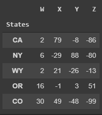
Summaries¶
THere are 3 methods we can use to get information about the data in the DataFrames they are:
describe()which will give a statistic description of the values
1 | |
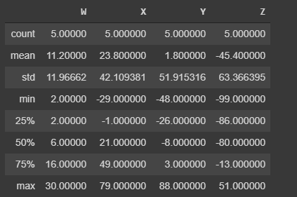
info()overall description of what is in the table
1 | |
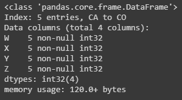
dtypes()to display the data type
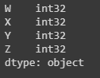
Missing Data¶
There are some methods in POandas that allow you to handle missing data in the DataFrames or series,
First lets create a new DataFrame with missing data
1 2 3 4 5 6 | |
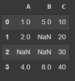
Removing missing data¶
To remove horizontally
1 2 3 4 | |
To do it Vertically
1 2 3 4 5 6 | |
Threshold¶
We can set a threshold for each column or row, if the row or column has equal or more of specific number of non-NaN
1 2 3 4 5 | |
Filling missing data¶
Now to fill the empty values we can use fillna(value=0) using as a argument for the parameter value either a string of an integer
1 2 3 4 5 6 7 | |
1 2 3 4 5 6 7 | |
1 2 3 4 5 6 7 | |
Groupby¶
the Method groupby() allow me to group different rows and call other functions ( aggregate functions)
first we will need to choose the column that we are going to use as a categorical column, which is the same that we are going to use with groupby, Second choose the aggregated function (e.g. max,min, mean, std, etc…)
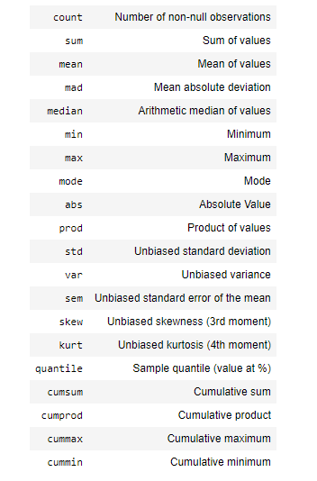
let make and example, we are going to read a file called “Universities.csv” and use the column ‘Year’ to group.
1 2 3 4 5 6 7 | |
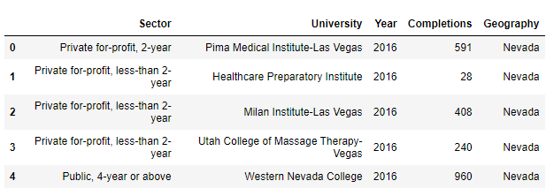
1 2 3 4 5 6 7 | |
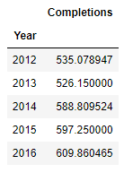
As well as the groupby the result of df.groupby('Year').mean() will be a DataFrame as well.
we can sort the results of mean()
1 | |
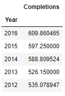
Groupby by multiple columns¶
We can make the grouping by multiple columns we just need to
1 | |
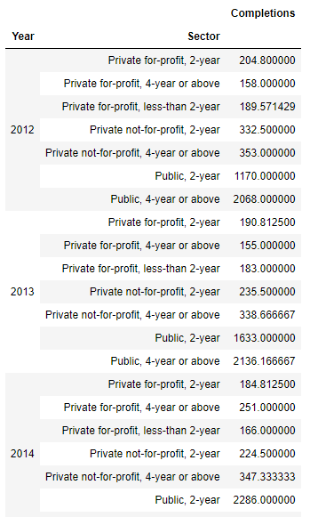
Now we are going to use describe() which will give use information about this dataFrame, but we will combine it with transpose() so we can change the columns for the rows and display it in a more readable way ( we are going to use just groupby with “Year”)
1 | |
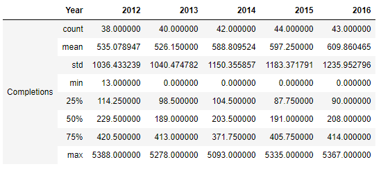
Operations¶
There are a set of operation that are useful but don’t fall in a specific category
for the next operation we will create the following DataFrame:
1 2 3 | |
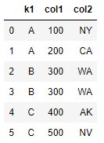
Unique Values¶
- Get the unique values.
1 2 | |
- Get number of unique values.
1 2 | |
- Count and Get the number of times a value is repeated
1 2 3 4 5 6 | |
- To remove duplicated rows
1 | |
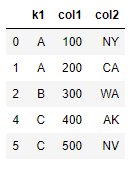
Create new Columns with Operations and Functions¶
1 | |
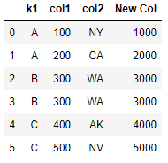
or we can use the method apply() and pass a customize function as a parameter
1 2 3 4 5 | |
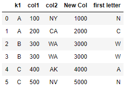
Be aware that we are not making a call of the function
grab_first_letter(), there is not “()”.
Mapping¶
now we are going to mapped some value to other lets check the column “k1”
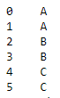
1 | |
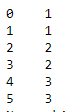
Sorting, min, max, columns and index¶
to get the max, min or their positions we use:
- To find max value:
df_one['col1'].max() - The index of the max value:
df_one['col1'].idxmax() - To find min value:
df_one['col1'].min() - The index of the min value:
df_one['col1'].idxmin() - Now for sorting:
df_one.sort_values('col2')
Concatenate DataFrames and Dummy variables¶
to concatenate we need to be careful in which axis we want to work with,
1 2 3 4 5 | |
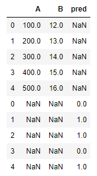
1 | |
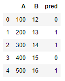
for the dummy variables, first, we are going to change the name of the columns
1 | |
later we can make the dummy variable
1 | |
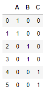
Data input and Data Output¶
for more detailed information of the different type of files and please visit the pandas documentation
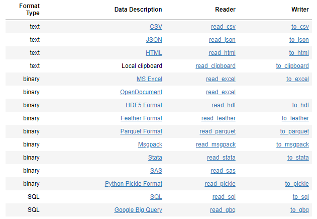
CSV¶
To be able to read this type of files we need two additional libraries:
- xlrd (
pip install xlrd). - openpyxl (
pip install openpyxl).
for reading CSV:
1 | |
for the Output
1 | |
HTML¶
Pandas is able to read table tabs of the HTML (if the firewall allow pandas to read the HTML) but it is necessary to add the following libraries:
- lxml (
pip install lxml). - html5lib (
pip install html5lib). - beautifulsoap4 (
pip install beautifulsoap4).
for the input, the read_html function willl read tables of the webpage and return a list of DataFrame object:
1 2 | |
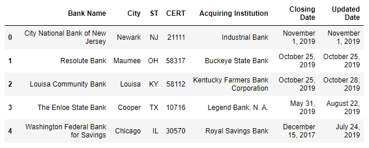